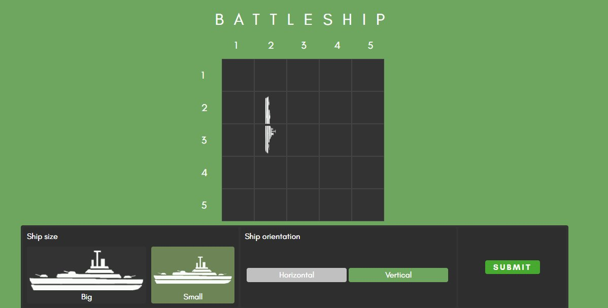

Portfolio

Face Recognition of K-Pop Music Videos
This project was my thesis for my bachelor's degree. Using K-Pop music videos as the subject, three groups are recognized by their faces of the model.

Battleship
As a requirement for our CMSC 137 class, this project utilized node.js, plain html and css. Like the name suggests, the classic game of Battleship is remade into an online game for two players.

Iskolarship
A web application that connects sponsors and scholars alike for an easier communication.